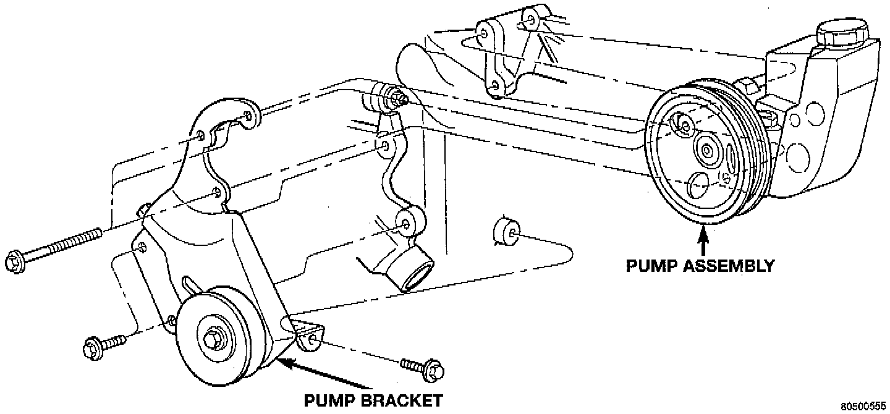
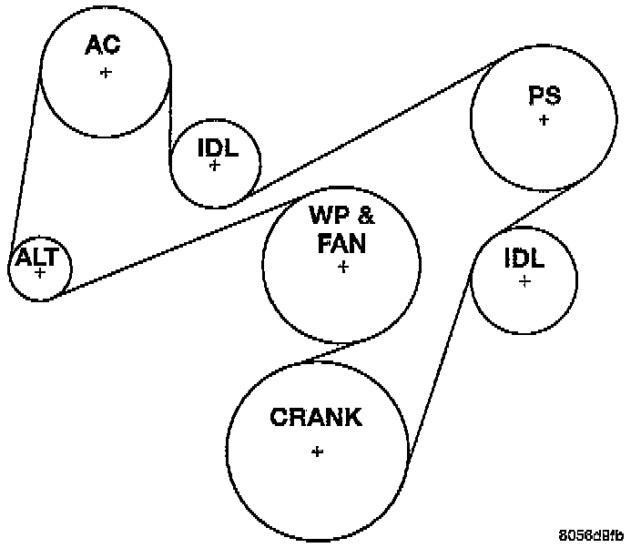

Drive Belt: Service and Repair
NOTE: The belt routing schematics are published from the latest information available at the time of publication. If anything differs between these schematics and the Belt Routing Label, use the schematics on Belt Routing Label. This label is located in the engine compartment.REMOVAL
Belt tension is adjusted at the power steering pump bracket and idler pulley assembly.
1. Disconnect negative battery cable from battery.

2. Loosen belt tension at power steering pump bracket and idler pulley.
3. Remove belt.
INSTALLATION
1. Check condition of all pulleys.

CAUTION: When installing the serpentine accessory drive belt, the belt MUST be routed correctly. If not, the engine may overheat due to the water pump rotating in the wrong direction.
2. Install new belt.
3. After power steering pump bracket and idler pulley has been tightened into position, recheck belt tension. Adjust if necessary.